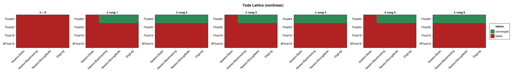
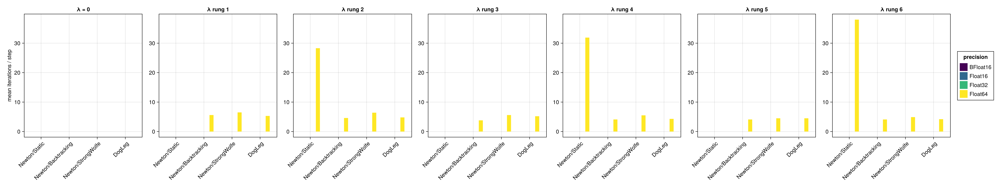
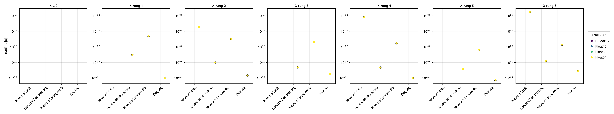
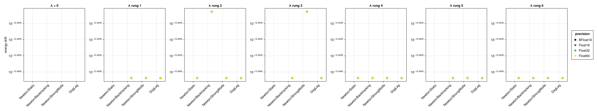
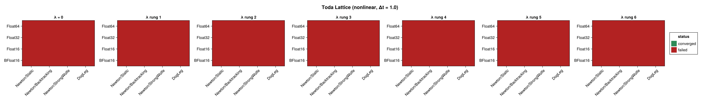

Toda Lattice (Nonlinear Integrator)
The Toda lattice (N = 16 sites) benchmarked with the NonLinear_OneLayer_GML integrator (see Harmonic Oscillator (Nonlinear Integrator) for the network setup and the regularization sweep). It is built as a 16-dimensional lodeproblem, so the network integrator solves a 16-dimensional implicit system at every step — the highest-dimensional problem in this study. Its Hamiltonian depends on both q and p; the energy drift is evaluated from the full state. No closed-form solution exists.
The figures panel by the regularization factor $\lambda$ — a rung of the $\sqrt{\varepsilon(T)}$ ladder, so one panel is a different shift at each precision; solver configurations are on the x-axis and precisions are distinguished by colour. Results are shown at $\Delta t = 0.1$ and repeated for $\Delta t = 1.0$ and $\Delta t = 10.0$ (ten steps each).
using SolverBenchmark
spec = toda_lattice_lode_spec(timespan = (0.0, 1.0), timestep = 0.1)
df = cached_sweep("nonlinear_toda_lattice_dt0.1") do
run_nonlinear_benchmark(spec; timing = :quick, max_iterations = 100,
verbose = false, quiet = true)
endConvergence
plot_convergence(df; panelcol = :regularization, title = "Toda Lattice (nonlinear)")
Nonlinear iterations
plot_iterations(df; panelcol = :regularization)
Run time
plot_runtime(df; panelcol = :regularization)
Energy drift
plot_energy_drift(df; panelcol = :regularization)
Discussion
- Despite its dimensionality the lattice is the cleanest case in the set: at
Float64, all four solvers converge at all six rungs and none at $\lambda = 0$ — 24 of 28, a perfect split on $\lambda > 0$. The 16-dimensional solve takes $\approx 12$ iterations per step and conserves the energy to $3.75 \times 10^{-13}$, again indistinguishable from rung to rung across a ladder spanning a factor of a thousand. Regularization here is purely a threshold. - Run times are higher than the low-dimensional examples (16 coupled network fits per step), which is the main cost visible here.
- Only
Float64converges (24/28);Float32,Float16andBFloat16fail at every rung. Scaling $\lambda$ to the precision does not help them, because the exception is not the one $\lambda$ addresses: it is raised in the OGA initial guess's Gram solve, upstream of the Newton iteration — see Harmonic Oscillator (Nonlinear Integrator).
Results table
markdown_table(summary_table(df; panelcol = :regularization))| precision | solver_label | regularization | converged | iterations_mean | runtime_s | max_residual | at_tolerance | energy_drift |
|---|---|---|---|---|---|---|---|---|
| BFloat16 | Newton/Static | λ = 0 | ✗ | — | — | — | ✗ | — |
| BFloat16 | Newton/Static | λ rung 1 | ✗ | — | — | — | ✗ | — |
| BFloat16 | Newton/Static | λ rung 2 | ✗ | — | — | — | ✗ | — |
| BFloat16 | Newton/Static | λ rung 3 | ✗ | — | — | — | ✗ | — |
| BFloat16 | Newton/Static | λ rung 4 | ✗ | — | — | — | ✗ | — |
| BFloat16 | Newton/Static | λ rung 5 | ✗ | — | — | — | ✗ | — |
| BFloat16 | Newton/Static | λ rung 6 | ✗ | — | — | — | ✗ | — |
| BFloat16 | Newton/Backtracking | λ = 0 | ✗ | — | — | — | ✗ | — |
| BFloat16 | Newton/Backtracking | λ rung 1 | ✗ | — | — | — | ✗ | — |
| BFloat16 | Newton/Backtracking | λ rung 2 | ✗ | — | — | — | ✗ | — |
| BFloat16 | Newton/Backtracking | λ rung 3 | ✗ | — | — | — | ✗ | — |
| BFloat16 | Newton/Backtracking | λ rung 4 | ✗ | — | — | — | ✗ | — |
| BFloat16 | Newton/Backtracking | λ rung 5 | ✗ | — | — | — | ✗ | — |
| BFloat16 | Newton/Backtracking | λ rung 6 | ✗ | — | — | — | ✗ | — |
| BFloat16 | Newton/StrongWolfe | λ = 0 | ✗ | — | — | — | ✗ | — |
| BFloat16 | Newton/StrongWolfe | λ rung 1 | ✗ | — | — | — | ✗ | — |
| BFloat16 | Newton/StrongWolfe | λ rung 2 | ✗ | — | — | — | ✗ | — |
| BFloat16 | Newton/StrongWolfe | λ rung 3 | ✗ | — | — | — | ✗ | — |
| BFloat16 | Newton/StrongWolfe | λ rung 4 | ✗ | — | — | — | ✗ | — |
| BFloat16 | Newton/StrongWolfe | λ rung 5 | ✗ | — | — | — | ✗ | — |
| BFloat16 | Newton/StrongWolfe | λ rung 6 | ✗ | — | — | — | ✗ | — |
| BFloat16 | DogLeg | λ = 0 | ✗ | — | — | — | ✗ | — |
| BFloat16 | DogLeg | λ rung 1 | ✗ | — | — | — | ✗ | — |
| BFloat16 | DogLeg | λ rung 2 | ✗ | — | — | — | ✗ | — |
| BFloat16 | DogLeg | λ rung 3 | ✗ | — | — | — | ✗ | — |
| BFloat16 | DogLeg | λ rung 4 | ✗ | — | — | — | ✗ | — |
| BFloat16 | DogLeg | λ rung 5 | ✗ | — | — | — | ✗ | — |
| BFloat16 | DogLeg | λ rung 6 | ✗ | — | — | — | ✗ | — |
| Float16 | Newton/Static | λ = 0 | ✗ | — | — | — | ✗ | — |
| Float16 | Newton/Static | λ rung 1 | ✗ | — | — | — | ✗ | — |
| Float16 | Newton/Static | λ rung 2 | ✗ | — | — | — | ✗ | — |
| Float16 | Newton/Static | λ rung 3 | ✗ | — | — | — | ✗ | — |
| Float16 | Newton/Static | λ rung 4 | ✗ | — | — | — | ✗ | — |
| Float16 | Newton/Static | λ rung 5 | ✗ | — | — | — | ✗ | — |
| Float16 | Newton/Static | λ rung 6 | ✗ | — | — | — | ✗ | — |
| Float16 | Newton/Backtracking | λ = 0 | ✗ | — | — | — | ✗ | — |
| Float16 | Newton/Backtracking | λ rung 1 | ✗ | — | — | — | ✗ | — |
| Float16 | Newton/Backtracking | λ rung 2 | ✗ | — | — | — | ✗ | — |
| Float16 | Newton/Backtracking | λ rung 3 | ✗ | — | — | — | ✗ | — |
| Float16 | Newton/Backtracking | λ rung 4 | ✗ | — | — | — | ✗ | — |
| Float16 | Newton/Backtracking | λ rung 5 | ✗ | — | — | — | ✗ | — |
| Float16 | Newton/Backtracking | λ rung 6 | ✗ | — | — | — | ✗ | — |
| Float16 | Newton/StrongWolfe | λ = 0 | ✗ | — | — | — | ✗ | — |
| Float16 | Newton/StrongWolfe | λ rung 1 | ✗ | — | — | — | ✗ | — |
| Float16 | Newton/StrongWolfe | λ rung 2 | ✗ | — | — | — | ✗ | — |
| Float16 | Newton/StrongWolfe | λ rung 3 | ✗ | — | — | — | ✗ | — |
| Float16 | Newton/StrongWolfe | λ rung 4 | ✗ | — | — | — | ✗ | — |
| Float16 | Newton/StrongWolfe | λ rung 5 | ✗ | — | — | — | ✗ | — |
| Float16 | Newton/StrongWolfe | λ rung 6 | ✗ | — | — | — | ✗ | — |
| Float16 | DogLeg | λ = 0 | ✗ | — | — | — | ✗ | — |
| Float16 | DogLeg | λ rung 1 | ✗ | — | — | — | ✗ | — |
| Float16 | DogLeg | λ rung 2 | ✗ | — | — | — | ✗ | — |
| Float16 | DogLeg | λ rung 3 | ✗ | — | — | — | ✗ | — |
| Float16 | DogLeg | λ rung 4 | ✗ | — | — | — | ✗ | — |
| Float16 | DogLeg | λ rung 5 | ✗ | — | — | — | ✗ | — |
| Float16 | DogLeg | λ rung 6 | ✗ | — | — | — | ✗ | — |
| Float32 | Newton/Static | λ = 0 | ✗ | — | — | — | ✗ | — |
| Float32 | Newton/Static | λ rung 1 | ✗ | — | — | — | ✗ | — |
| Float32 | Newton/Static | λ rung 2 | ✗ | — | — | — | ✗ | — |
| Float32 | Newton/Static | λ rung 3 | ✗ | — | — | — | ✗ | — |
| Float32 | Newton/Static | λ rung 4 | ✗ | — | — | — | ✗ | — |
| Float32 | Newton/Static | λ rung 5 | ✗ | — | — | — | ✗ | — |
| Float32 | Newton/Static | λ rung 6 | ✗ | — | — | — | ✗ | — |
| Float32 | Newton/Backtracking | λ = 0 | ✗ | — | — | — | ✗ | — |
| Float32 | Newton/Backtracking | λ rung 1 | ✗ | — | — | — | ✗ | — |
| Float32 | Newton/Backtracking | λ rung 2 | ✗ | — | — | — | ✗ | — |
| Float32 | Newton/Backtracking | λ rung 3 | ✗ | — | — | — | ✗ | — |
| Float32 | Newton/Backtracking | λ rung 4 | ✗ | — | — | — | ✗ | — |
| Float32 | Newton/Backtracking | λ rung 5 | ✗ | — | — | — | ✗ | — |
| Float32 | Newton/Backtracking | λ rung 6 | ✗ | — | — | — | ✗ | — |
| Float32 | Newton/StrongWolfe | λ = 0 | ✗ | — | — | — | ✗ | — |
| Float32 | Newton/StrongWolfe | λ rung 1 | ✗ | — | — | — | ✗ | — |
| Float32 | Newton/StrongWolfe | λ rung 2 | ✗ | — | — | — | ✗ | — |
| Float32 | Newton/StrongWolfe | λ rung 3 | ✗ | — | — | — | ✗ | — |
| Float32 | Newton/StrongWolfe | λ rung 4 | ✗ | — | — | — | ✗ | — |
| Float32 | Newton/StrongWolfe | λ rung 5 | ✗ | — | — | — | ✗ | — |
| Float32 | Newton/StrongWolfe | λ rung 6 | ✗ | — | — | — | ✗ | — |
| Float32 | DogLeg | λ = 0 | ✗ | — | — | — | ✗ | — |
| Float32 | DogLeg | λ rung 1 | ✗ | — | — | — | ✗ | — |
| Float32 | DogLeg | λ rung 2 | ✗ | — | — | — | ✗ | — |
| Float32 | DogLeg | λ rung 3 | ✗ | — | — | — | ✗ | — |
| Float32 | DogLeg | λ rung 4 | ✗ | — | — | — | ✗ | — |
| Float32 | DogLeg | λ rung 5 | ✗ | — | — | — | ✗ | — |
| Float32 | DogLeg | λ rung 6 | ✗ | — | — | — | ✗ | — |
| Float64 | Newton/Static | λ = 0 | ✗ | — | — | — | ✗ | — |
| Float64 | Newton/Static | λ rung 1 | ✗ | 23.8 | 3.27 | 1.27e-13 | ✗ | — |
| Float64 | Newton/Static | λ rung 2 | ✓ | 28.3 | 2.84 | 5.65e-14 | ✓ | 3.75e-13 |
| Float64 | Newton/Static | λ rung 3 | ✗ | 40.1 | 4.07 | 1.32e-13 | ✗ | — |
| Float64 | Newton/Static | λ rung 4 | ✓ | 31.9 | 3.8 | 5.63e-14 | ✓ | 3.75e-13 |
| Float64 | Newton/Static | λ rung 5 | ✗ | 44.3 | 4.73 | 1.3e-13 | ✗ | — |
| Float64 | Newton/Static | λ rung 6 | ✓ | 38 | 4.45 | 5.67e-14 | ✓ | 3.75e-13 |
| Float64 | Newton/Backtracking | λ = 0 | ✗ | 94.1 | 24.1 | 5.69e-09 | ✗ | — |
| Float64 | Newton/Backtracking | λ rung 1 | ✓ | 5.6 | 1.25 | 1.06e-13 | ✓ | 3.75e-13 |
| Float64 | Newton/Backtracking | λ rung 2 | ✓ | 4.6 | 0.999 | 1.26e-13 | ✓ | 3.77e-13 |
| Float64 | Newton/Backtracking | λ rung 3 | ✓ | 3.8 | 0.863 | 1.1e-13 | ✓ | 3.75e-13 |
| Float64 | Newton/Backtracking | λ rung 4 | ✓ | 4.1 | 0.861 | 1.08e-13 | ✓ | 3.75e-13 |
| Float64 | Newton/Backtracking | λ rung 5 | ✓ | 4.1 | 0.823 | 9.89e-14 | ✓ | 3.75e-13 |
| Float64 | Newton/Backtracking | λ rung 6 | ✓ | 4.1 | 1.05 | 1.13e-13 | ✓ | 3.75e-13 |
| Float64 | Newton/StrongWolfe | λ = 0 | ✗ | 100 | 34.3 | 9.21e-10 | ✗ | — |
| Float64 | Newton/StrongWolfe | λ rung 1 | ✓ | 6.5 | 2.17 | 7.29e-14 | ✓ | 3.75e-13 |
| Float64 | Newton/StrongWolfe | λ rung 2 | ✓ | 6.4 | 2 | 7.89e-14 | ✓ | 3.75e-13 |
| Float64 | Newton/StrongWolfe | λ rung 3 | ✓ | 5.6 | 1.83 | 8.31e-14 | ✓ | 3.77e-13 |
| Float64 | Newton/StrongWolfe | λ rung 4 | ✓ | 5.5 | 1.76 | 8.91e-14 | ✓ | 3.75e-13 |
| Float64 | Newton/StrongWolfe | λ rung 5 | ✓ | 4.5 | 1.46 | 6.85e-14 | ✓ | 3.75e-13 |
| Float64 | Newton/StrongWolfe | λ rung 6 | ✓ | 4.9 | 1.69 | 8.71e-14 | ✓ | 3.75e-13 |
| Float64 | DogLeg | λ = 0 | ✗ | 100 | 10.8 | 9.21e-09 | ✗ | — |
| Float64 | DogLeg | λ rung 1 | ✓ | 5.3 | 0.626 | 9.33e-14 | ✓ | 3.75e-13 |
| Float64 | DogLeg | λ rung 2 | ✓ | 4.8 | 0.681 | 8.91e-14 | ✓ | 3.75e-13 |
| Float64 | DogLeg | λ rung 3 | ✓ | 5.2 | 0.711 | 1.05e-13 | ✓ | 3.75e-13 |
| Float64 | DogLeg | λ rung 4 | ✓ | 4.3 | 0.631 | 1.14e-13 | ✓ | 3.75e-13 |
| Float64 | DogLeg | λ rung 5 | ✓ | 4.5 | 0.592 | 9.27e-14 | ✓ | 3.75e-13 |
| Float64 | DogLeg | λ rung 6 | ✓ | 4.2 | 0.774 | 1.25e-13 | ✓ | 3.75e-13 |
Coarse time step (Δt = 1.0)
spec1 = toda_lattice_lode_spec(timespan = (0.0, 10.0), timestep = 1.0)
df1 = cached_sweep("nonlinear_toda_lattice_dt1.0") do
run_nonlinear_benchmark(spec1; timing = :quick, max_iterations = 100,
verbose = false, quiet = true)
endplot_convergence(df1; panelcol = :regularization, title = "Toda Lattice (nonlinear, Δt = 1.0)")
markdown_table(summary_table(df1; panelcol = :regularization))| precision | solver_label | regularization | converged | iterations_mean | runtime_s | max_residual |
|---|---|---|---|---|---|---|
| BFloat16 | Newton/Static | λ = 0 | ✗ | — | — | — |
| BFloat16 | Newton/Static | λ rung 1 | ✗ | — | — | — |
| BFloat16 | Newton/Static | λ rung 2 | ✗ | — | — | — |
| BFloat16 | Newton/Static | λ rung 3 | ✗ | — | — | — |
| BFloat16 | Newton/Static | λ rung 4 | ✗ | — | — | — |
| BFloat16 | Newton/Static | λ rung 5 | ✗ | — | — | — |
| BFloat16 | Newton/Static | λ rung 6 | ✗ | — | — | — |
| BFloat16 | Newton/Backtracking | λ = 0 | ✗ | — | — | — |
| BFloat16 | Newton/Backtracking | λ rung 1 | ✗ | — | — | — |
| BFloat16 | Newton/Backtracking | λ rung 2 | ✗ | — | — | — |
| BFloat16 | Newton/Backtracking | λ rung 3 | ✗ | — | — | — |
| BFloat16 | Newton/Backtracking | λ rung 4 | ✗ | — | — | — |
| BFloat16 | Newton/Backtracking | λ rung 5 | ✗ | — | — | — |
| BFloat16 | Newton/Backtracking | λ rung 6 | ✗ | — | — | — |
| BFloat16 | Newton/StrongWolfe | λ = 0 | ✗ | — | — | — |
| BFloat16 | Newton/StrongWolfe | λ rung 1 | ✗ | — | — | — |
| BFloat16 | Newton/StrongWolfe | λ rung 2 | ✗ | — | — | — |
| BFloat16 | Newton/StrongWolfe | λ rung 3 | ✗ | — | — | — |
| BFloat16 | Newton/StrongWolfe | λ rung 4 | ✗ | — | — | — |
| BFloat16 | Newton/StrongWolfe | λ rung 5 | ✗ | — | — | — |
| BFloat16 | Newton/StrongWolfe | λ rung 6 | ✗ | — | — | — |
| BFloat16 | DogLeg | λ = 0 | ✗ | — | — | — |
| BFloat16 | DogLeg | λ rung 1 | ✗ | — | — | — |
| BFloat16 | DogLeg | λ rung 2 | ✗ | — | — | — |
| BFloat16 | DogLeg | λ rung 3 | ✗ | — | — | — |
| BFloat16 | DogLeg | λ rung 4 | ✗ | — | — | — |
| BFloat16 | DogLeg | λ rung 5 | ✗ | — | — | — |
| BFloat16 | DogLeg | λ rung 6 | ✗ | — | — | — |
| Float16 | Newton/Static | λ = 0 | ✗ | — | — | — |
| Float16 | Newton/Static | λ rung 1 | ✗ | — | — | — |
| Float16 | Newton/Static | λ rung 2 | ✗ | — | — | — |
| Float16 | Newton/Static | λ rung 3 | ✗ | — | — | — |
| Float16 | Newton/Static | λ rung 4 | ✗ | — | — | — |
| Float16 | Newton/Static | λ rung 5 | ✗ | — | — | — |
| Float16 | Newton/Static | λ rung 6 | ✗ | — | — | — |
| Float16 | Newton/Backtracking | λ = 0 | ✗ | — | — | — |
| Float16 | Newton/Backtracking | λ rung 1 | ✗ | — | — | — |
| Float16 | Newton/Backtracking | λ rung 2 | ✗ | — | — | — |
| Float16 | Newton/Backtracking | λ rung 3 | ✗ | — | — | — |
| Float16 | Newton/Backtracking | λ rung 4 | ✗ | — | — | — |
| Float16 | Newton/Backtracking | λ rung 5 | ✗ | — | — | — |
| Float16 | Newton/Backtracking | λ rung 6 | ✗ | — | — | — |
| Float16 | Newton/StrongWolfe | λ = 0 | ✗ | — | — | — |
| Float16 | Newton/StrongWolfe | λ rung 1 | ✗ | — | — | — |
| Float16 | Newton/StrongWolfe | λ rung 2 | ✗ | — | — | — |
| Float16 | Newton/StrongWolfe | λ rung 3 | ✗ | — | — | — |
| Float16 | Newton/StrongWolfe | λ rung 4 | ✗ | — | — | — |
| Float16 | Newton/StrongWolfe | λ rung 5 | ✗ | — | — | — |
| Float16 | Newton/StrongWolfe | λ rung 6 | ✗ | — | — | — |
| Float16 | DogLeg | λ = 0 | ✗ | — | — | — |
| Float16 | DogLeg | λ rung 1 | ✗ | — | — | — |
| Float16 | DogLeg | λ rung 2 | ✗ | — | — | — |
| Float16 | DogLeg | λ rung 3 | ✗ | — | — | — |
| Float16 | DogLeg | λ rung 4 | ✗ | — | — | — |
| Float16 | DogLeg | λ rung 5 | ✗ | — | — | — |
| Float16 | DogLeg | λ rung 6 | ✗ | — | — | — |
| Float32 | Newton/Static | λ = 0 | ✗ | — | — | — |
| Float32 | Newton/Static | λ rung 1 | ✗ | — | — | — |
| Float32 | Newton/Static | λ rung 2 | ✗ | — | — | — |
| Float32 | Newton/Static | λ rung 3 | ✗ | — | — | — |
| Float32 | Newton/Static | λ rung 4 | ✗ | — | — | — |
| Float32 | Newton/Static | λ rung 5 | ✗ | — | — | — |
| Float32 | Newton/Static | λ rung 6 | ✗ | — | — | — |
| Float32 | Newton/Backtracking | λ = 0 | ✗ | — | — | — |
| Float32 | Newton/Backtracking | λ rung 1 | ✗ | — | — | — |
| Float32 | Newton/Backtracking | λ rung 2 | ✗ | — | — | — |
| Float32 | Newton/Backtracking | λ rung 3 | ✗ | — | — | — |
| Float32 | Newton/Backtracking | λ rung 4 | ✗ | — | — | — |
| Float32 | Newton/Backtracking | λ rung 5 | ✗ | — | — | — |
| Float32 | Newton/Backtracking | λ rung 6 | ✗ | — | — | — |
| Float32 | Newton/StrongWolfe | λ = 0 | ✗ | — | — | — |
| Float32 | Newton/StrongWolfe | λ rung 1 | ✗ | — | — | — |
| Float32 | Newton/StrongWolfe | λ rung 2 | ✗ | — | — | — |
| Float32 | Newton/StrongWolfe | λ rung 3 | ✗ | — | — | — |
| Float32 | Newton/StrongWolfe | λ rung 4 | ✗ | — | — | — |
| Float32 | Newton/StrongWolfe | λ rung 5 | ✗ | — | — | — |
| Float32 | Newton/StrongWolfe | λ rung 6 | ✗ | — | — | — |
| Float32 | DogLeg | λ = 0 | ✗ | — | — | — |
| Float32 | DogLeg | λ rung 1 | ✗ | — | — | — |
| Float32 | DogLeg | λ rung 2 | ✗ | — | — | — |
| Float32 | DogLeg | λ rung 3 | ✗ | — | — | — |
| Float32 | DogLeg | λ rung 4 | ✗ | — | — | — |
| Float32 | DogLeg | λ rung 5 | ✗ | — | — | — |
| Float32 | DogLeg | λ rung 6 | ✗ | — | — | — |
| Float64 | Newton/Static | λ = 0 | ✗ | — | — | — |
| Float64 | Newton/Static | λ rung 1 | ✗ | — | — | — |
| Float64 | Newton/Static | λ rung 2 | ✗ | — | — | — |
| Float64 | Newton/Static | λ rung 3 | ✗ | — | — | — |
| Float64 | Newton/Static | λ rung 4 | ✗ | — | — | — |
| Float64 | Newton/Static | λ rung 5 | ✗ | — | — | — |
| Float64 | Newton/Static | λ rung 6 | ✗ | — | — | — |
| Float64 | Newton/Backtracking | λ = 0 | ✗ | 100 | 19.4 | 0.000217 |
| Float64 | Newton/Backtracking | λ rung 1 | ✗ | 25.3 | 4.96 | 0.000532 |
| Float64 | Newton/Backtracking | λ rung 2 | ✗ | 33.8 | 7.38 | 0.00354 |
| Float64 | Newton/Backtracking | λ rung 3 | ✗ | 15.1 | 2.77 | 2.19e-08 |
| Float64 | Newton/Backtracking | λ rung 4 | ✗ | 16.9 | 3.68 | 8.99e-09 |
| Float64 | Newton/Backtracking | λ rung 5 | ✗ | 27.1 | 4.91 | 0.00329 |
| Float64 | Newton/Backtracking | λ rung 6 | ✗ | 16.9 | 3.09 | 6.88e-05 |
| Float64 | Newton/StrongWolfe | λ = 0 | ✗ | — | — | — |
| Float64 | Newton/StrongWolfe | λ rung 1 | ✗ | 24.5 | 6.82 | 7.29e-05 |
| Float64 | Newton/StrongWolfe | λ rung 2 | ✗ | — | — | — |
| Float64 | Newton/StrongWolfe | λ rung 3 | ✗ | 23.8 | 6.39 | 0.000733 |
| Float64 | Newton/StrongWolfe | λ rung 4 | ✗ | 18.5 | 5.94 | 9.48e-09 |
| Float64 | Newton/StrongWolfe | λ rung 5 | ✗ | 32.7 | 9.27 | 0.00312 |
| Float64 | Newton/StrongWolfe | λ rung 6 | ✗ | 16.3 | 4.78 | 7.79e-05 |
| Float64 | DogLeg | λ = 0 | ✗ | 95.1 | 9.16 | 1.54e-05 |
| Float64 | DogLeg | λ rung 1 | ✗ | 25.4 | 2.44 | 8.93e-05 |
| Float64 | DogLeg | λ rung 2 | ✗ | 27.1 | 2.65 | 8.89e-05 |
| Float64 | DogLeg | λ rung 3 | ✗ | 24.1 | 2.29 | 6.42e-05 |
| Float64 | DogLeg | λ rung 4 | ✗ | 25.1 | 2.46 | 0.000146 |
| Float64 | DogLeg | λ rung 5 | ✗ | 24.1 | 2.25 | 3.89e-05 |
| Float64 | DogLeg | λ rung 6 | ✗ | 20.2 | 1.95 | 1.07e-06 |
Large time step (Δt = 10.0)
spec10 = toda_lattice_lode_spec(timespan = (0.0, 100.0), timestep = 10.0)
df10 = cached_sweep("nonlinear_toda_lattice_dt10.0") do
run_nonlinear_benchmark(spec10; timing = :quick, max_iterations = 100,
verbose = false, quiet = true)
endplot_convergence(df10; panelcol = :regularization, title = "Toda Lattice (nonlinear, Δt = 10.0)")markdown_table(summary_table(df10; panelcol = :regularization))| precision | solver_label | regularization | converged | iterations_mean | runtime_s | max_residual |
|---|---|---|---|---|---|---|
| BFloat16 | Newton/Static | λ = 0 | ✗ | — | — | — |
| BFloat16 | Newton/Static | λ rung 1 | ✗ | — | — | — |
| BFloat16 | Newton/Static | λ rung 2 | ✗ | — | — | — |
| BFloat16 | Newton/Static | λ rung 3 | ✗ | — | — | — |
| BFloat16 | Newton/Static | λ rung 4 | ✗ | — | — | — |
| BFloat16 | Newton/Static | λ rung 5 | ✗ | — | — | — |
| BFloat16 | Newton/Static | λ rung 6 | ✗ | — | — | — |
| BFloat16 | Newton/Backtracking | λ = 0 | ✗ | — | — | — |
| BFloat16 | Newton/Backtracking | λ rung 1 | ✗ | — | — | — |
| BFloat16 | Newton/Backtracking | λ rung 2 | ✗ | — | — | — |
| BFloat16 | Newton/Backtracking | λ rung 3 | ✗ | — | — | — |
| BFloat16 | Newton/Backtracking | λ rung 4 | ✗ | — | — | — |
| BFloat16 | Newton/Backtracking | λ rung 5 | ✗ | — | — | — |
| BFloat16 | Newton/Backtracking | λ rung 6 | ✗ | — | — | — |
| BFloat16 | Newton/StrongWolfe | λ = 0 | ✗ | — | — | — |
| BFloat16 | Newton/StrongWolfe | λ rung 1 | ✗ | — | — | — |
| BFloat16 | Newton/StrongWolfe | λ rung 2 | ✗ | — | — | — |
| BFloat16 | Newton/StrongWolfe | λ rung 3 | ✗ | — | — | — |
| BFloat16 | Newton/StrongWolfe | λ rung 4 | ✗ | — | — | — |
| BFloat16 | Newton/StrongWolfe | λ rung 5 | ✗ | — | — | — |
| BFloat16 | Newton/StrongWolfe | λ rung 6 | ✗ | — | — | — |
| BFloat16 | DogLeg | λ = 0 | ✗ | — | — | — |
| BFloat16 | DogLeg | λ rung 1 | ✗ | — | — | — |
| BFloat16 | DogLeg | λ rung 2 | ✗ | — | — | — |
| BFloat16 | DogLeg | λ rung 3 | ✗ | — | — | — |
| BFloat16 | DogLeg | λ rung 4 | ✗ | — | — | — |
| BFloat16 | DogLeg | λ rung 5 | ✗ | — | — | — |
| BFloat16 | DogLeg | λ rung 6 | ✗ | — | — | — |
| Float16 | Newton/Static | λ = 0 | ✗ | — | — | — |
| Float16 | Newton/Static | λ rung 1 | ✗ | — | — | — |
| Float16 | Newton/Static | λ rung 2 | ✗ | — | — | — |
| Float16 | Newton/Static | λ rung 3 | ✗ | — | — | — |
| Float16 | Newton/Static | λ rung 4 | ✗ | — | — | — |
| Float16 | Newton/Static | λ rung 5 | ✗ | — | — | — |
| Float16 | Newton/Static | λ rung 6 | ✗ | — | — | — |
| Float16 | Newton/Backtracking | λ = 0 | ✗ | — | — | — |
| Float16 | Newton/Backtracking | λ rung 1 | ✗ | — | — | — |
| Float16 | Newton/Backtracking | λ rung 2 | ✗ | — | — | — |
| Float16 | Newton/Backtracking | λ rung 3 | ✗ | — | — | — |
| Float16 | Newton/Backtracking | λ rung 4 | ✗ | — | — | — |
| Float16 | Newton/Backtracking | λ rung 5 | ✗ | — | — | — |
| Float16 | Newton/Backtracking | λ rung 6 | ✗ | — | — | — |
| Float16 | Newton/StrongWolfe | λ = 0 | ✗ | — | — | — |
| Float16 | Newton/StrongWolfe | λ rung 1 | ✗ | — | — | — |
| Float16 | Newton/StrongWolfe | λ rung 2 | ✗ | — | — | — |
| Float16 | Newton/StrongWolfe | λ rung 3 | ✗ | — | — | — |
| Float16 | Newton/StrongWolfe | λ rung 4 | ✗ | — | — | — |
| Float16 | Newton/StrongWolfe | λ rung 5 | ✗ | — | — | — |
| Float16 | Newton/StrongWolfe | λ rung 6 | ✗ | — | — | — |
| Float16 | DogLeg | λ = 0 | ✗ | — | — | — |
| Float16 | DogLeg | λ rung 1 | ✗ | — | — | — |
| Float16 | DogLeg | λ rung 2 | ✗ | — | — | — |
| Float16 | DogLeg | λ rung 3 | ✗ | — | — | — |
| Float16 | DogLeg | λ rung 4 | ✗ | — | — | — |
| Float16 | DogLeg | λ rung 5 | ✗ | — | — | — |
| Float16 | DogLeg | λ rung 6 | ✗ | — | — | — |
| Float32 | Newton/Static | λ = 0 | ✗ | — | — | — |
| Float32 | Newton/Static | λ rung 1 | ✗ | — | — | — |
| Float32 | Newton/Static | λ rung 2 | ✗ | — | — | — |
| Float32 | Newton/Static | λ rung 3 | ✗ | — | — | — |
| Float32 | Newton/Static | λ rung 4 | ✗ | — | — | — |
| Float32 | Newton/Static | λ rung 5 | ✗ | — | — | — |
| Float32 | Newton/Static | λ rung 6 | ✗ | — | — | — |
| Float32 | Newton/Backtracking | λ = 0 | ✗ | — | — | — |
| Float32 | Newton/Backtracking | λ rung 1 | ✗ | 93.8 | 14.1 | 67.2 |
| Float32 | Newton/Backtracking | λ rung 2 | ✗ | 98.5 | 14.7 | 852 |
| Float32 | Newton/Backtracking | λ rung 3 | ✗ | — | — | — |
| Float32 | Newton/Backtracking | λ rung 4 | ✗ | 92 | 13.8 | 1.51e+03 |
| Float32 | Newton/Backtracking | λ rung 5 | ✗ | — | — | — |
| Float32 | Newton/Backtracking | λ rung 6 | ✗ | — | — | — |
| Float32 | Newton/StrongWolfe | λ = 0 | ✗ | — | — | — |
| Float32 | Newton/StrongWolfe | λ rung 1 | ✗ | — | — | — |
| Float32 | Newton/StrongWolfe | λ rung 2 | ✗ | — | — | — |
| Float32 | Newton/StrongWolfe | λ rung 3 | ✗ | — | — | — |
| Float32 | Newton/StrongWolfe | λ rung 4 | ✗ | — | — | — |
| Float32 | Newton/StrongWolfe | λ rung 5 | ✗ | — | — | — |
| Float32 | Newton/StrongWolfe | λ rung 6 | ✗ | — | — | — |
| Float32 | DogLeg | λ = 0 | ✗ | 100 | 8.26 | 173 |
| Float32 | DogLeg | λ rung 1 | ✗ | 100 | 7.7 | 462 |
| Float32 | DogLeg | λ rung 2 | ✗ | — | — | — |
| Float32 | DogLeg | λ rung 3 | ✗ | 100 | 10.7 | 460 |
| Float32 | DogLeg | λ rung 4 | ✗ | — | — | — |
| Float32 | DogLeg | λ rung 5 | ✗ | 100 | 8.41 | 1.5e+03 |
| Float32 | DogLeg | λ rung 6 | ✗ | 100 | 8.12 | 117 |
| Float64 | Newton/Static | λ = 0 | ✗ | — | — | — |
| Float64 | Newton/Static | λ rung 1 | ✗ | — | — | — |
| Float64 | Newton/Static | λ rung 2 | ✗ | — | — | — |
| Float64 | Newton/Static | λ rung 3 | ✗ | — | — | — |
| Float64 | Newton/Static | λ rung 4 | ✗ | — | — | — |
| Float64 | Newton/Static | λ rung 5 | ✗ | — | — | — |
| Float64 | Newton/Static | λ rung 6 | ✗ | — | — | — |
| Float64 | Newton/Backtracking | λ = 0 | ✗ | 100 | 23.2 | 1.21e+03 |
| Float64 | Newton/Backtracking | λ rung 1 | ✗ | — | — | — |
| Float64 | Newton/Backtracking | λ rung 2 | ✗ | — | — | — |
| Float64 | Newton/Backtracking | λ rung 3 | ✗ | — | — | — |
| Float64 | Newton/Backtracking | λ rung 4 | ✗ | — | — | — |
| Float64 | Newton/Backtracking | λ rung 5 | ✗ | — | — | — |
| Float64 | Newton/Backtracking | λ rung 6 | ✗ | — | — | — |
| Float64 | Newton/StrongWolfe | λ = 0 | ✗ | — | — | — |
| Float64 | Newton/StrongWolfe | λ rung 1 | ✗ | — | — | — |
| Float64 | Newton/StrongWolfe | λ rung 2 | ✗ | — | — | — |
| Float64 | Newton/StrongWolfe | λ rung 3 | ✗ | 98.6 | 36.3 | NaN |
| Float64 | Newton/StrongWolfe | λ rung 4 | ✗ | — | — | — |
| Float64 | Newton/StrongWolfe | λ rung 5 | ✗ | — | — | — |
| Float64 | Newton/StrongWolfe | λ rung 6 | ✗ | — | — | — |
| Float64 | DogLeg | λ = 0 | ✗ | 100 | 11.1 | 85.6 |
| Float64 | DogLeg | λ rung 1 | ✗ | 100 | 10.7 | 158 |
| Float64 | DogLeg | λ rung 2 | ✗ | 100 | 10.9 | 94.8 |
| Float64 | DogLeg | λ rung 3 | ✗ | 100 | 10.5 | 78.5 |
| Float64 | DogLeg | λ rung 4 | ✗ | 100 | 11 | 3.8e+03 |
| Float64 | DogLeg | λ rung 5 | ✗ | 100 | 10.8 | 27.5 |
| Float64 | DogLeg | λ rung 6 | ✗ | — | — | — |